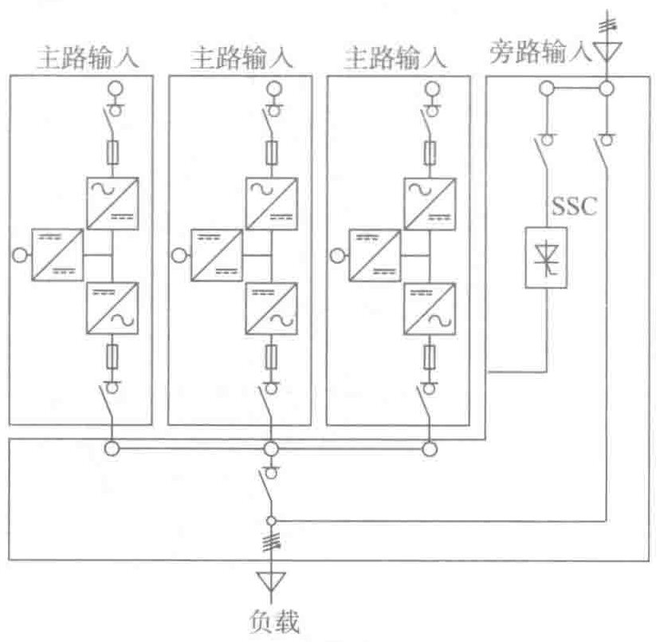
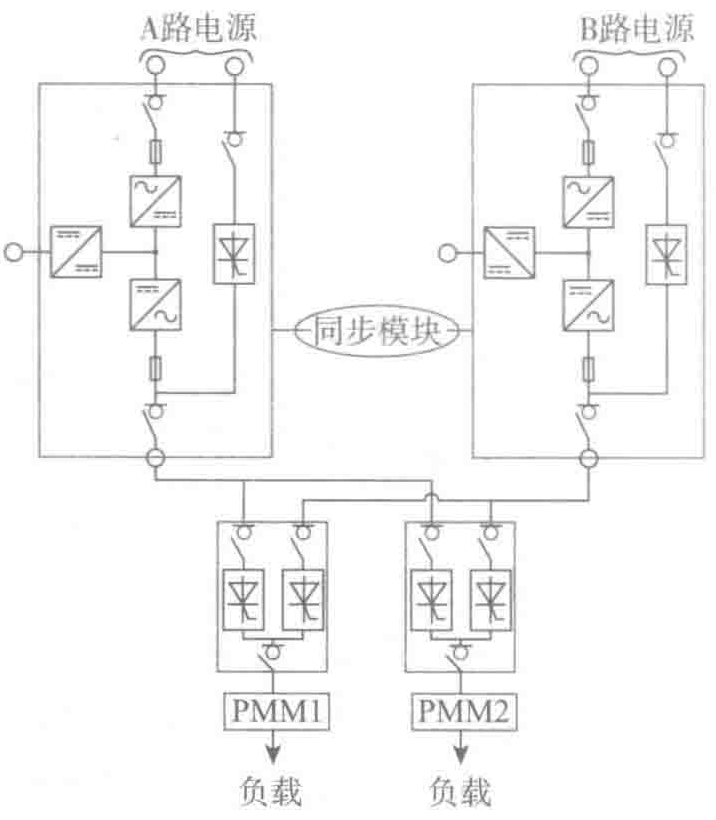

负载供电仍然受到其他单元和SSC的保护。在维护SSC期间，仍然能保持UPS单元的冗余供电。
- 可升级性：可达多个UPS单元并联。
- 各个UPS单元均分负载。

（6）标准配置6：静态切换开关（STS）组成的分布式冗余

图3-27所示是在可用性、现场操作和安全性等方面都是最佳的解决方案，并且这是唯一一种可对负载进行电力分配和重组的解决方案。它的灵活性使得供电系统特别容易实现负载所需要的冗余。
- 可用性：超过99.9999%，具有最高的可用性等级。
- 可维护性：完全分布式冗余，维护可在没有任何负载的情况下进行，达到最大的安全性。
- 可升级性：利用部分隔离分布组件的能力，非常容易升级和扩容。
3.3 直流UPS（HVDC供电电源）
3.3.1 交流供电与直流供电的区别
1. 数据中心采用交流供电的原因
至今为止，交流电仍然是数据中心供电的主流方式，但是交流电并不是最高效的供电